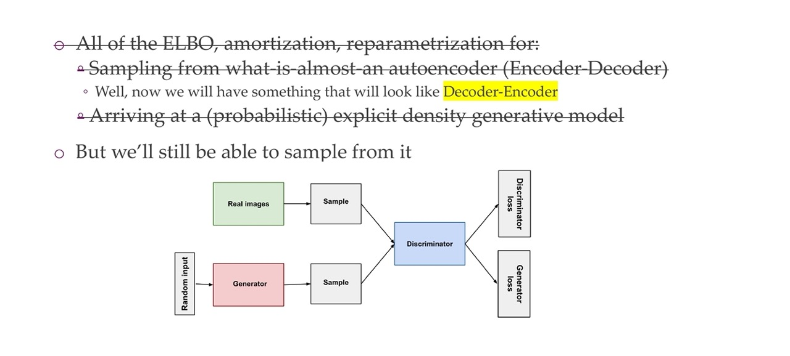
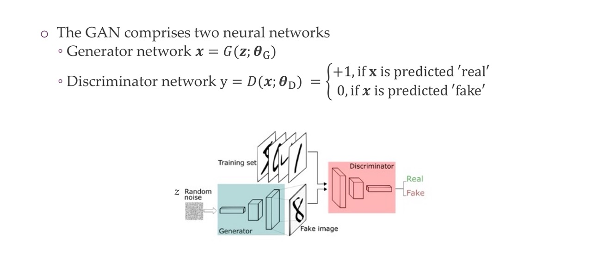
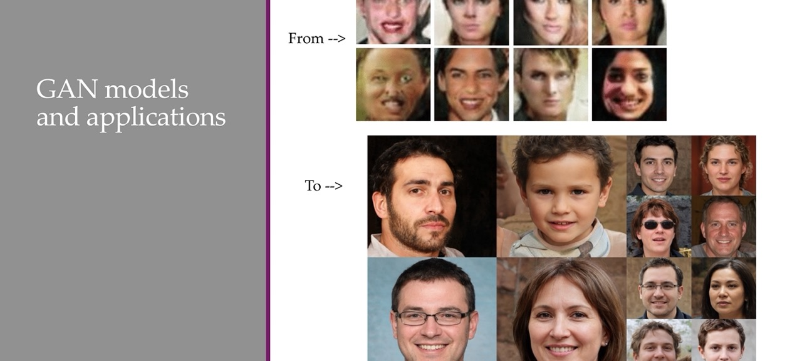
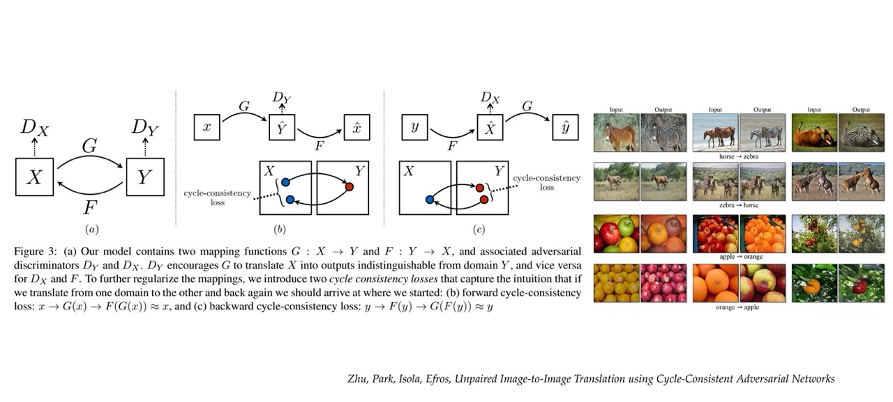

Generative Adversarial Networks and Diffusion models
1 Lecture overview
These models are “implicit” because they do not explicitly define the probability distribution, but rather define it indirectly. Instead of specifying a probability density function, implicit density models rely on generating samples from a distribution and use these samples to implicitly model the underlying probability distribution.
One popular approach to implicit density modeling is through the use of generative models
2 A map of generative models
Here in the implicity density you can sample from the probability distribution, but it cannot give you an estimate of how likely a particular image is
3 Last time
4 Today

Here we say Generated as refering to fake, because it was generated. The Discriminator would be in such a manner that it will learn how to tell between real and fake. And the Generator will also be a NN trained in a manner that tries to fool the Discriminator
5 Explicit density vs implicit density
- Purple: if x was taken from the true distribution then P_theta is high
- Explicit and VAE kinda do both, it includes both things. Explicitly density is more difficult because we can do both escentially.
- Green: samples taken from p_theta they should behave similar to the real sample
- Here we can get a sample but we cannot give get the distribution p_theta of x so the probability values
6 Learning an implicit density function
If the generation is not possible, then lets train some gradients to train the generator.
7 Generations of high quality, various potential applications
8 Title
LEFT:
- Sample on image from the dataset
- Put it through the differentiable function \(D\),
Discriminator. Now the descriminator for real iamges will try to retunr a value near 1, if is from the real image.
RIGHT: Generated image
- Sample noise
- Put it into the generator \(G\) network and we will end up with some image.
Then we do it all over again. Sample x from data, but now the Discriminator tries to detect if its wrong, a fake image. The Generator then tries to fool it
9 What is a GAN?
10 GAN: Intuition: arms race
At the start the discriminator will discriminate well. The analogy is of detecting money. At the begining, we want to detect whether the money is true. Both do not have clue. At the beginning the police is the baby and the money looks rather fake. You start trianing these and they become better.
When they reach Nash equilibrium it means they cannot improve their solution in its own. It may not be a globally optimal solution but that is how the Nash equilibrium is defined.
11 Title
12 GAN architecture

13 GAN has no ”encoder” — it’s a discriminator
GAN has no encoder but instead it has a discriminator. The features that the discriminator learn are not necessarily as noise as for example the higuer level features may be car types or not. Because for detecting real vs fake all what we need is for example if the image is blurry. GANs do not end up with blurry features if trained correctly vs VAE tend to end up with blurry features
We cannot test the likelihood but we can only sample new data points
14 1) Generator network x = G(z; \(\theta\)_G)
We start with a lower dimensionality z, and generate x, except we are not giveing z any constraints. We are simply sampling it from some distribution. Since i.e you are sampling from a Gaussian distribution 0, 1, whithou any correlations between the dimensions of z, it means you can sample new samples easility because you just generate a new noise sample and is very likely that if you sample a new one, this has not been seen yet. So then this new image that is not seen it goes trhough the network and you get a completely new sample.
In the image on the right you see de-convolutions happening to create a new image. With transpose convolutions you also have the bias that neighboring pixels are similar and that operations are shared across the spatial dimensions
15 2) Discriminator network y = D(x; \(\theta\)_D9)
The loss that we will learn is the binary cross entropy loss, because we are simply trying to detect between one and another class so the loss is a binary Cross entropy loss. We want to ouput 1 if real, 0 if fake,
16 Generator & Discriminator: Implementation
17 Quiz: The starting point of the GAN is the random noise z.
- Is always true because anything can be called regularizer. It simply means help training
- Not true because you are really using augmentations. You dont want a network that i.e to ouput heavily color jiter ouputs or you dont want vertically flipped images. Noisy isn’t really meant for that
- It is not true because it is trained in a manner that it should do because as long as you sampling z from the Gaussian distribution so you could end up with a point that is very far away but is unlikely
- If your dataset is small enough, for i.e it is only 5k points then, one millions points is close to be random at that point. And should work because even if you grid is a fixed thins and your model needs to map this to a dog and this to a cat. It will do it by itself
Z needs to vary. If z is much smaller than the dataset size you will have trouble becuase then you can only generate say 3 different kind of classes but the dataset is 4 classes. Then the discriminator will have an easy time at telling what is real and what is fake
18 How do we train the generator?
We generate somthing that looks like a deer and we can compare it to an image of a deer. We cannot do this. They are completely independent
The question is how can we get meaningfull gradients if we are not comaparing the same things?
We have:
- Minimax Loss
- Heuristic non-saturating loss
- Modifying GANs for max-likelihood
19 1) Minimax Loss
So basically the loss of the generator is the negative version of the discriminator. his make it symmetric, the higher one the lower the other
It is called minimax because the discriminator tries to maximize its loss so \(J_D\) and then the generator tries to minimize that loss. What you end up with this min max loss is topically a saddle point. See next slide
20 1) Minimax Loss
We get a saddle point as the learning stops at some point. At that point we have have gradients being zero in both directions
The generator first will not recieve any gradient anymore and at that point the discriminator will also not get any gradients any more. This behaviour is not great because it allows for easy analysis but it will cause training to get stuck because the job of the discriminator is very easy at that point.
21 2) Heuristic non-saturating loss
This is the adapeted version of minmax which is a non saturated loss.
Changes pretty easily in that, changes to the discriminator loss as it is. And instead you use the generator loss.
Now, you cannot describe the equilibrium by a single loss anymore as we did earlier with the minus loss. That means you dont end up at a saddle point. The discriminator job is now to maximize the log-likelihood of discovering the real samples and the fake samples. And the generator maximizes the log likelihood of the discriminator being wrong
What changes now is that the generator learns still when the discriminator is too good on real images. This is because previously the generator loss is also this mixture of how good the discriminator is on real images and how good it is in fake iamges and now the generator loss only depend on the generator ouputs
What you generate with GANs can look like augmentations but depending on the augmentation, z can model that.
A generator is not a different augmentation, a generator has a whole different purpose that you actually can model and generate whole new images. It is not like these faces are just slightly blurrier or slightly brighter of existing faces. It is literally new samples that do not exist in the real word. This is different from augmentations
In the above formulas we can sample three batches from the generator and one batch from the real distribution and still calculate the loss. You can leave out the 1/2, you can simply multiply by the learning rate by 1/2 and then you end with the same result. These batches are computed in average so you could compute this loss with ten times as many from the real one and only one from the real distribution
22 3) Modifying GANs for max-likelihood
By computing this loss we have the advantage that when the discriminator is optimal, the gradient for the generator gradient matches that of maximum likelihood.
23 Comparison of Generator Losses
0 means we can detect the fake images and thus we set them with a lower value. When is 1 it means that the discriminator believes that the generated image is a true image.
1: Not a good discriminator because he thinks the fake image is true
0: Good discriminator, can distinguish between fake an real images
24 Optimal discriminator
The real distribution given the data is given in black. The model distribution is in green, that is the thing that the generator would be adapting. The discrimnator after a while stops learning. That is the picture from the right. The discriminator tries to see where the overlap is. At the last point the discriminator measure this ratio of overlaps
25 Why is this the optimal discriminator?
X: is data
z: is the generated data
We sum the losses, in the second row we rewrite z into another x
26 GANs and Jensen-Shannon divergence
The Jenses-Shannon divergence (in grey) is a metric to compare two distributions, it compares them by taking the weighted average of the KL.
Now solving for the optimal discriminator and you get the two term. There you can see these two integrals. Rewriting we have that the loss is two times the Jensen-Shannon between the two probabilities distributions. For the optimal loss -2log2. Then that means the Jensen divergence is minimized, meaning it becomes zero. What we are optimizing is actually the Jensen divergence between these two probabilities distributions.
27 Is the divergence important?
The question is why is the divergence important, it could be any kind of divergence like the KL and another ones.
28 KL vs JS
Here we see that the JS is symmetric
29 Is the divergence important?
It matters which divergence metric we take depending on what we do. You will either capture something that is in between two modes of the data which means the samples you will get will not be realistic or only rarely. Or the other option is that you capture one mode i.e with the reversed KL, except that in our case is the other way around which means the KL wil give you the mode capturing so depending on how you write you will have this risk of adversion behaviour this mode capturing behaviour.
For the backward KL is also called ‘zero forcing’ which make it more conservative, it will try to avoid putting probability mass where there is none. So it will avoid this zero areas whereas on the other way around is completely fine
30 General observations
31 Training procedure
32 How research gets done part 8
33 Challenges of Training GANs
There is three versions Loss of GANS and the original one (minimax) does not work in practice
34 Challenge 1: Vanishing Gradients

Here in the right you see a trained GAN model. You keep the generator fix and you only train the discriminator for a few iterations. Then what you can observe is that in the y-axis is the loss that you would get to the generator so you keep the generator fix but you simply look at the loss that the generator would get for this given discriminator. What you can see is that the loss is given in absolute value and you can see that the blue line goes from 10^0 to 10^-3. So it crosses three levels of magnitude the red one even crosses 5 values of magnitud which means the discriminator can learn to distinguish this real-true extremely quickly and at that point your gradients are 10^-6 so then is like zero. At that point you do not get gradients anymore if the discriminator is really good, so the gradients will go to zero.
If the discriminator is bad then the generator will not get any good gradients as well which means it will not get good training. Specially earlier in the training where everything is bad. The discriminator will have an easier time because it can still recognize these weird patches and rare edges, so some solutions is that you give to the generator more iterations. Another solution is that you add an encoder that encodes a real image and then you discriminate on this encoding of the image
35 Challenge 2: Low dimensional supports
Another challenge is the with low-dimensional manifolds. They idally capture a theme or an object and once you have them all the pixels can be generated from it very easily. That is why this low dimensional embedding space. However if this manifolds (which are surfaces or lines) they do not match at all so it is very easy for the discriminator to simple put a line trough this and understand they are different.
In training the manifold is not completely perfect so it is extremelly easy for these models to discriminate this because the Jensen divergence gives you extremelly low value if they do not have an overlap. So here you have a chicken-egg problem that the loss will start being meningful once your generationed data is good.
For this we have the solution wGAN which basically uses other metric to compare the real vs false. So even if you have 2D surfaces, such as here, you can see that the overlap will be fairly low that means the discriminator has a easy time
36 Challenge 3: Batch Normalization
Batch norm is a problem here because you are mixing for example batches of real images and batches from not real images. Then you compute the bach statistics from this combination. That leads to a smooth but awkward faces. So instead of this you can do the following. See next slide
37 Reference batch normalization
Here we can keeo a refence batch. Say you train with two minibatches, you have a reference batch where you compute the mean and standard deviation. Then you use the other second minibatch for training. However this lack of variation wrt to the reference batch will give you troubles because one of the main benefits from batch norm was that it sort of gives you this variability and regularization effect. A solution for that is
38 Virtual batch normalization
39 Challenge 4: Convergence
The other challenge is convergence. In the context of Generative Adversarial Networks (GANs), convergence to a saddle point is the desired outcome of the training process. This is because saddle points represent a stable equilibrium point in the game between the generator and the discriminator, where neither agent can unilaterally improve its performance. In other words, both the generator and the discriminator are “optimal” in their respective roles, but they cannot push each other further towards their respective optima without sacrificing their own performance.
The Challenges of Saddle Points
While saddle points are the desired outcome of GAN training, they can be challenging to achieve due to the complex and non-convex nature of the optimization landscape. This means that there are many different paths that the training process can take, and it is possible to get stuck in local optima that are not truly optimal.
40 Challenge: mode collapse
Mode-collapse is a phenomenon that occurs when the generator becomes unable to generate a diverse range of samples. Instead, the generator becomes fixated on producing a small subset of samples, effectively “collapsing” into a single mode. This can result in blurry, repetitive, or unrealistic generated images.
For example if you have this simple target distribution of these 8 Gaussians and you want to train a generative model, it sometimes will fit towards one of these modes and it will have a difficult time fitting to one of these modes of input data. Similarly for image based models you can see that all these images of flowers they literally look the same, so there is no variation capture at all. It is simply capturing one of the modes. This happens because if the discriminator wants to see that it look similar to the real data. Then the Generator can simply learn only one target and not care about divergence at all.
This is not desired and so a solution would be to add diversity as a regularization loss
41 Potential solution regularize for diversity
The solution for falling into mode-collapse is that you compare each sample by the other examples in the mini-batch. Yuo check whether you can discriminate between these two. You look what is the entropy whithin these samples. And you can add this as a loss. If you simply inforce a huge amount of entropy whithin the mini-batch then this will give more more varied exmaples but this will not look realistic pictures anymore
42 Mode-collapse vs over-generalisation
Here in over-generalization is not like you train with cat and dogs and then you can generate pictures of planes. Here in generalization images go over the training set which generally means they are looking realistic
In the case of unconditional generation, we generate dogs and catgs. In the case con conditinal generation we generate dogs from different type of dogs
43 Challenge: how to evaluate?
FReshee inception distance, You push the real and the generated images of same size through a pre-trained inception network. You then use the dense features and compare these dense features by contruction a Gaussian distribution out of them. So you then comparing them by simply taking the difference between the dataset wise features. This tells me how good a set of generated images matches another images.
Low FID: the distribution of the real images is similar to the fake ones.
For instance if you do mode dropping the FID will be low because the distance to all these dog images would be suddenly pretty highHigh FID: the distribution of the real images is different to the fake ones.
If these things do not look at all like the real class then the FDI would be high
The Fréchet Inception Distance (FID) is a metric used to measure the similarity between the distribution of real and fake images generated by a GAN. It is calculated by comparing the activations of a pre-trained InceptionNet model on both the real and fake images.
The FID is a powerful metric for evaluating the performance of GANs, as it can provide insights into both the realism and diversity of the generated images. A lower FID indicates that the distribution of the fake images is more similar to the distribution of the real images, suggesting that the GAN is generating more realistic and diverse images.
44 Challenge: beyond images
- Text are discrete chunks, so you cannot model as continous variables where you can simply push the gradietns trough, which is what we are doing for RGB images. For these iamges we are pretending that they are continuous.
45 Some open challenges for GANs
What sorts of distributions can GANs model?
GANs can model a wide variety of distributions, including both continuous and discrete distributions. For example, GANs have been used to generate images, text, music, and code.
What can we say about the global convergence of the training dynamics?
The global convergence of GAN training dynamics is a challenging problem that is not fully understood. However, there has been some progress in developing theoretical guarantees for the convergence of GANs. For example, it has been shown that GANs can converge to a Nash equilibrium under certain conditions.
How should we evaluate GANs and when should we use them?
There is no single best way to evaluate GANs. However, some common evaluation metrics include the Fréchet Inception Distance (FID) for image generation and the BLEU score for text generation. GANs should be used when the goal is to generate realistic and diverse samples from a given distribution.
GAN scaling: dataset size and model size
GANs can be scaled to large datasets and model sizes. However, scaling GANs can be challenging, as it can lead to training instability and mode collapse. There are a number of techniques that have been developed to help scale GANs, such as gradient clipping and spectral normalization.
GANs and adversarial examples?
GANs have been used to generate adversarial examples, which are inputs that are designed to fool machine learning models. Adversarial examples can be a security risk, as they can be used to attack machine learning models that are used in critical applications, such as facial recognition and self-driving cars.
46 One-sided label smoothing
47 Benefits of label smoothing
48 GANSs sometimes explode
49 Title

50 DCGAN
51 Examples
52 Even vector space arithmetics …
53 Can generate new views
54 Wasserstein GAN
You can get gradients even if this two distributions do no match. Here we would have a 1 W value indicating the distributions do not match at all. So even if the discriminator is having an easy time, you still are getting gradients
55 Differences in GANs
56 BigBiGAN
57 So what changed? More data? – No
58 So what changed? Architectures and compute: yes
59 Conditional GAN
60 Image to image translation
61 Adversarial AutoEncoders: and adversarial network in latent space
In the autoencoder we want to minimize the reconstructed error. Here we simply add an adversarial loss in the latent space \(z\). That means we will now be containing the latent space in a manner that it will be easy to sample from.
Encoder: This part takes an input image x and encodes it into a latent representation z through a deterministic function q(z|x), which is typically a neural network. The deterministic aspect means that for the same input x, the encoder will always produce the same latent code z.
Here the q(z|x) is called the variational posterior. It can be Gaussian and then we will make it Gaussian
Before we have that we wanted to approximate the real posterior p(z|x) with this q(z|x). So here we are saying that before we use the KL in VAE to give it structure but not the AAE uses an adversarial network for this.
Remember that: p(z∣x) is the true posterior distribution of the latent variables given the input data, which is generally intractable to compute directly. Remember the picture below we were unable to commpute this posterior because it related to compute this integral
The AAE does not need to operate in the image domain it can just work in the latent domain. It also does not need to be image model but instead a bunch of MLPs
62 CycleGAN: “img2img” models

It is called cycle because you go from one domain to another, if you look at for example image B. You go from domian x to y and then you go back to domain x. And then you know that you should end up in the same place. If you do then that means that the mapping worked perfectly
63 StyleGAN and StyleGANv2
64 Title
65 Overview of methods
66 Basic idea of diffusion models: learning how to denoise
You start with a real image and then you start increasingly adding noise. So you are trying to learn something that is noisy to something that is less noisy.
This is a completely new paradigm
Forward Process (Adding Noise): Starting with an original image \(X_0\), noise is gradually added over a series of steps until the image becomes a noisy version \(X_T\) that is typically assumed to follow a Gaussian distribution. This process is termed the forward diffusion process and is denoted by the rightward arrows in the image. Each step adds a controlled amount of noise, progressively making the image less recognizable and more like random noise.
Reverse Process (Removing Noise): The key idea behind diffusion models is to learn how to reverse this noising process. This is where the model learns to ‘denoise’ the image. Starting from a noisy image \(X_T\), the model attempts to recover the clean image \(X_0\) through a series of reverse steps. This is the reverse diffusion process and is indicated by the leftward arrows in the image. Each step in the reverse process is denoted by \(p_\theta(X_{t-1}|X_t)\), which is the learned distribution to predict the cleaner image \(X_{t-1}\) from the noisier image \(X_t\).
Variational Lower Bound: The training of diffusion models involves optimizing the variational lower bound, which is a way to ensure that the learned distribution over the reverse process closely matches the true distribution of the data. It’s a technique derived from variational inference used to approximate complex distributions.
Unknown Transition Distributions: In the diagram, it is noted that \(q(X_{t-1}|X_t)\) is unknown. This represents the true reverse transition probabilities from a noisier to a less noisy image, which we do not have explicitly. The model has to learn an approximation \(p_\theta(X_{t-1}|X_t)\) without knowing \(q(X_{t-1}|X_t)\).
Learning Process: During training, the model learns the parameters \(\theta\) that define how to reverse the noise added during the forward process effectively. The learned distribution \(p_\theta(X_{t-1}|X_t)\) is used to iteratively generate less noisy images until a clear image is formed.
Image Generation: Once trained, diffusion models can generate new images by sampling from the noise distribution \(X_T\) and applying the reverse process. This allows the model to create images that were not in the training set but share the same statistical properties.
Escentially what you are trying to learn is the green function which is how to reverse the noise added during the forward process
67 Diffusion models turn generative learning into a sequence of supervised problems

These difussion models basically turn generative modelling into a sequence of supervised models because you have your image and you have noise. So you know how it looks before so you simply are trying to turn this whole dinoising procedure into a different steps. These steps are form \(t\) to \(t-1\). You can use this as a supervised learning method
68 The architecture: a modified U-Net that uses diffusion time t
The architecture here is a U-Net because a U-Net is an architecture that takes an image in and ouputs an image out. Like one of those segmentations. The only difference is that there is a time \(t\) which is used for going from going noisy to less noisy. In adittion the NN also knows when this time frame is
69 Combining this with text as cond. inputs: DALL-E v2 / “unCLIP”

So you first train a CLIP which gives you an encoding and a text encoding and then image encoding. Afterwards you use this text encondings to convert
70 Final note about deep fakes and ethics
71 Recommended watch (just 34min)
72 Quiz: What dimensions need to be considered when thinking about
73 More on that previous one..
74 Sy Generative Adversarial Networks (GANs) are a type of deep learning model
Si | I } } I } } ar of GANs that is used for unsupervised learning. GANs consist of two components: a
generative model, which is trained to generate samples that are similar to a